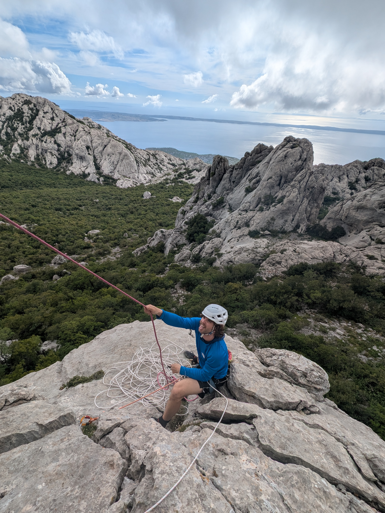
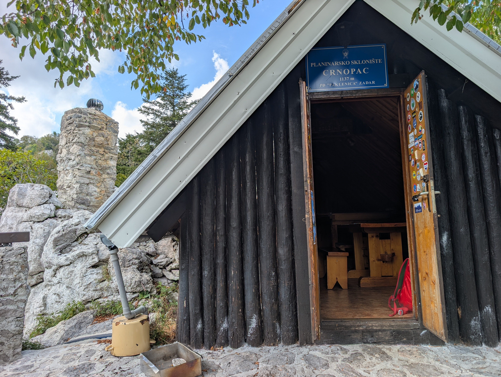
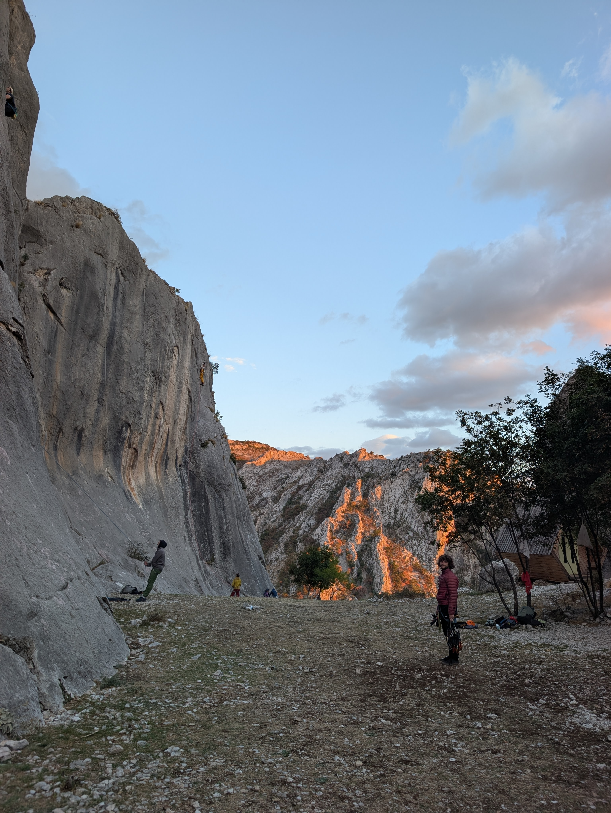
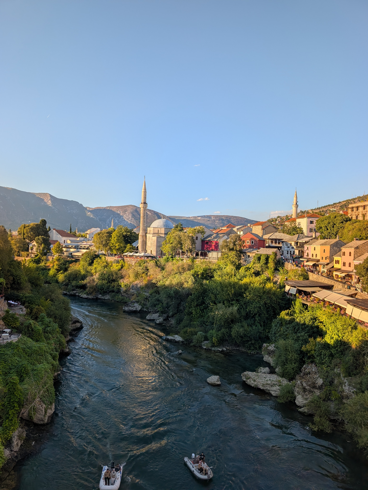

|
Von chlei Venedig über Venedig nach Paklenica
|
September 26
|
|

|
|
Rätikon
Nach einem letzten Montagabend im Minimum
verabschiedeten wir uns von unseren Freunden und unserer
Lieblingsboulderhalle, und die Ferien konnten endlich
starten. Man würde es uns zwar nicht zutrauen, aber
einen Plan für die ersten paar Tage hatten wir bereits.
Allerdings wurde durch den angesagten Regen in so
ziemlich ganz Europa unser Plan sogleich wieder auf den
Kopf gestellt.
Weil wir jedoch keinen Tag mehr ohne Klettern aushalten
wollten, haben wir uns für einen Zwischenstopp im
Rätikon auf dem Weg nach Kroatien entschieden. Im Sektor
chlei Venedig haben wir uns in die Route Gruobenputz
getraut und in der schwierigsten Seillänge gleich mal
auf den Putz bekommen. Rückblickend war das gar nicht
schlecht, da sich die Kroaten als die grössten
Sandbagger herausgestellt haben.1
Nach chlei Venedig ging es weiter zum richtigen Venedig.
Wir sind früh aufgestanden und konnten die Gassen und
Brücken vor dem grossen Touristenstrom geniessen. Nach
einer kleinen Walking-Tour und Bootsfahrt sind wir dann
weiter nach Kroatien gefahren.
|
|
|
Kroatien
Am ersten Tag in Kroatien haben wir aufgrund unsicheren
Wetters eine kurze Kletterei am sogenannten Strogir
gewählt. Es war toller scharfer Kalk und leider hat es
uns beim Abseilen das Seil eingeklemmt. So sind aus den
zwei Seillängen und dem Zustieg ein ganzes Tagesprogramm
geworden. Flo hat aber nicht aufgegeben und wir konnten
das Seil retten.
|
|

Seilverhänger beim Abseilen am Strogir
|

Flo in der Route Besmrtnici
|

Die imposante Nordwand der Anica Kuk
|
|
|
Nun sind wir an unserem ersten Ziel angekommen:
Paklenica, ein fürs Klettern bekannter Nationalpark
direkt am Meer. Wir haben einen herzigen Campingplatz
mit einer super sympathischen Besitzerin mit Putzfimmel
gefunden. Sie hat uns nicht nur jeden Tag nach den
genauen Klettertouren gefragt, sondern auch unser
gekochtes Nachtessen genauestens begutachtet. Bei
unseren ersten Problemen mit dem Auto haben sie und ihr
Mann uns zu einem Mechaniker geschickt, welcher die
leuchtende Motorwarnlampe innert einer Minute zum
Erlöschen brachte. Es wird sich zeigen, ob uns die
Warnlampe bald wieder beschäftigen wird.
|
|

Die Hütte auf der Wanderung im Velebitgebirge
|

Durchschlupf auf dem Weg zum Bili Kuk
|

Nebelstimmung bei der Wanderung auf den Crnopac
|
|

Die einzige Matratze in der Hütte
|

Relaxen auf dem Camping von Duschanka
|
|
|
Geklettert sind wir hier vor allem an der Anica Kuk, der
grössten Kalkwand des Nationalparks und ganz Kroatiens.
Mit rund 350 m sind es alles lange und fordernde Routen,
darum brauchten wir bereits nach drei Klettertagen eine
längere Pause. In dieser Pause gingen wir auf Empfehlung
von Michi im Velebitgebirge wandern. Dort schliefen wir
eine Nacht in einer kleinen Hütte, wo wir entgegen
unserer Erwartung nur eine löchrige Luftmatratze
vorfanden. Mit nur 40 cm Platz pro Person und mehreren
Aufblas-Intermezzos während der Nacht fiel die Erholung
doch nicht so grosszügig aus.
|

Tolle Seillänge in "The Show must go on"
|

Eine der vielen Schnecken in der Nordwand der
Anica Kuk
|
|

Sara in der überhängenden Seillänge des Klassikers
"Klin"
|

Im Abstieg von der Anica Kuk
|
|
|
|
Herzegowina
Nach drei weiteren Klettertagen an der Nordwand von
Anica Kuk sind wir ziemlich ausgelaugt in Richtung
Herzegowina aufgebrochen. Leider meldete sich bereits
nach wenigen Kilometern die Motorwarnleuchte wieder. Der
nächste Mechaniker war von unserer Reise nicht
begeistert: „Can’t you do something useful? Like work in
fabric or safe the children?“ Dafür hat er sich nicht
nur um die Leuchte gekümmert, sondern auch um das
zugrundeliegende Problem (ein kaputter Schlauch). Geld
wollte er für seine Arbeit keines: „Go, go, just go and
do something useful in life!“
|
|

Die Platten im Sektor Rebro in Blagaj, Bosnien
|
|
Die letzte Septemberwoche haben wir in Herzegowina an
einem Kletterfestival im kleinen Dorf Blagaj verbracht.
Es war sehr cool, zusammen mit den Locals zu klettern
und neben dem Fels auch die bosnische Kultur besser
kennenzulernen. Der Höhepunkt des Festivals war ein
zweitägiger „Klettermarathon“, bei dem wir in der
Kategorie Slab-King/Queen teilgenommen haben. Unsere
Ambitionen wurden jedoch von einem Paar aus Blagaj
begraben, die an diesen Tagen beide weit über 20 schwere
Routen geklettert sind.
|
|

Fluss Neretva in Mostar
|

Sara auf der Highline
|

Minaret in Mostar
|
|

Flo auf der Highline
|

Flos erster erfolgreicher Haarschnitt
|
|
|
|
1
Personen, die Routen mit zu tiefem Klettergrad bewerten,
so dass die Route einfacher scheint, als sie ist.
|
|
|
Bis zum nächsten Mal
Die nächste Ausgabe kommt im Oktober. Wer mitlesen möchte:
E-Mail-Adresse eintragen
|
|